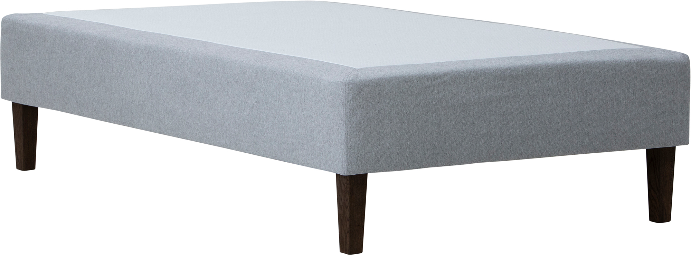
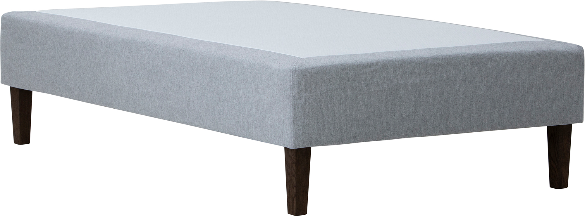

Moon Silver divan bed 140x200, pocket 5-zone. Primo 84 light grey
197660
 

Description
Experience serene comfort and understated elegance with the Moon Silver divan bed measuring 140x200 cm, finished in a refined light grey Primo 84 fabric. Part of the versatile and quality-conscious NEST & LIVING collection, this bed features a premium 5-zone pocket spring system that provides tailored support to every part of your body for an enhanced sleeping experience.
The bed rests on tall, conical legs finished in smoked ash, imparting a light and modern aesthetic while facilitating effortless cleaning beneath. The sturdy frame is crafted from durable wood backed by an industry-leading 4000-day quality guarantee, assuring durability and long-lasting performance.
Customize your sleep setup by pairing the divan with an optional mattress topper or headboard, available at an additional cost, to create your ideal sleeping environment tailored to your preferences.
Maintenance is straightforward: regularly vacuum upholstery and clean with a damp cloth to keep it looking fresh and inviting.
The Moon Silver divan bed combines functional design with elegant style, making it an excellent choice for those seeking quality and comfort in a stylish, practical solution.
Technical specifications
| Size | 140 × 200 cm |
|---|---|
| Color | Light gray |
| Comfort options | 5-zone pocket spring system |
| Legs | 23 cm tall conical legs in smoked ash |
| Frame material | Durable wood with 4000-day quality guarantee |
| Mattress topper | Not included (optional accessory) |
| Headboard | Not included (optional accessory) |
| Care instructions | Maintain upholstery by regular vacuuming and wiping with a damp cloth. |
| Tier | Silver |